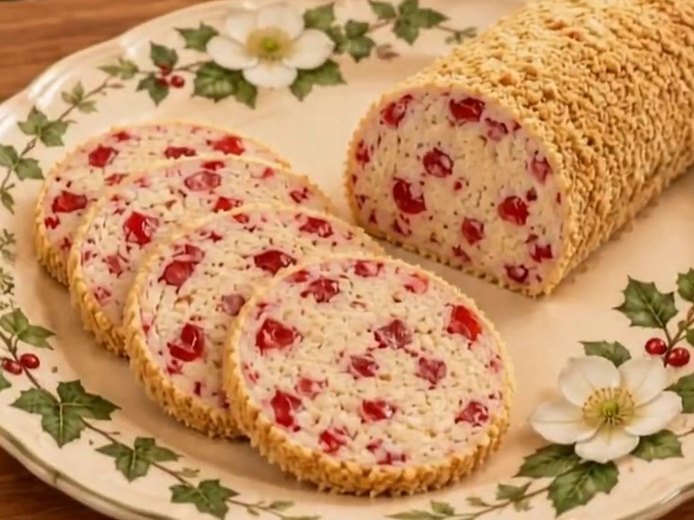

No-bake · old-fashioned · Christmas cookie tray
Grandma's Snow Log
Everybody makes a Yule log. Nobody makes a Snow Log, and that's a mistake. Cream cheese, icing sugar, vanilla wafers and maraschino cherries, rolled in crumbs like a little snowbank, then chilled and sliced thin. No oven, no fuss, just cherry heaven.

Ingredients
- 4 oz (125 g) cream cheese, softened
- 1½ cups icing sugar (confectioners' sugar), plus more as needed
- 1 cup vanilla wafer crumbs, for the log
- ¼ tsp salt
- ½ cup maraschino cherries, well drained and chopped
- ¼ cup vanilla wafer crumbs, for rolling
Instructions
- Dry the cherries: drain the chopped cherries well, then pat them with paper towels until you've soaked up as much moisture as you can. This is the secret to a log that holds its shape.
- Beat the cream cheese: in a bowl, beat the softened cream cheese until smooth.
- Mix it together: work in the icing sugar, 1 cup of the vanilla wafer crumbs, the salt and the cherries.
- Adjust the texture: if the mixture is too soft or sticky to shape, add more icing sugar a little at a time until it holds together.
- Shape the log: form the mixture into a log about 2 inches (5 cm) across.
- Roll in crumbs: roll the log in the remaining ¼ cup of vanilla wafer crumbs until evenly coated.
- Wrap and chill: wrap in parchment or wax paper, place in an airtight container or plastic bag, and refrigerate for at least 3 hours, or overnight.
- Slice and serve: cut into thin slices and serve chilled. Keep any leftover log wrapped in the fridge.
Dry those cherries like they owe you money. Wet cherries make a soggy log. And if the recipe says 1½ cups of icing sugar but your mixture says more, listen to the mixture.
Good to know
Storing
Keep the log wrapped in parchment or wax paper in an airtight container or bag in the fridge, and slice off what you need. It keeps for up to a week.
Freezing
Wrap the log tightly in plastic wrap and then foil, and freeze for up to 2 months. Thaw it in the fridge overnight before slicing.
Swaps
No vanilla wafers? Graham cracker crumbs work too. For a Christmas look, use half red and half green maraschino cherries.
Questions people ask
Why is my snow log too soft to shape?
The cherries weren't dry enough, or it needs a little more icing sugar. Add icing sugar a spoonful at a time until the mixture holds its shape, then chill it well.
How long does a snow log need to chill?
At least 3 hours, so it's firm enough to slice cleanly. Overnight is even better.
Can I make a snow log ahead for Christmas?
Yes. It keeps in the fridge for up to a week, or in the freezer for up to 2 months, which makes it a handy make-ahead treat for cookie trays.